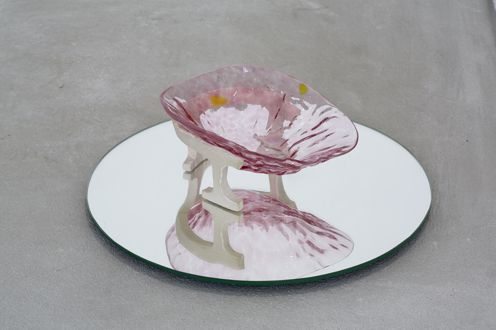
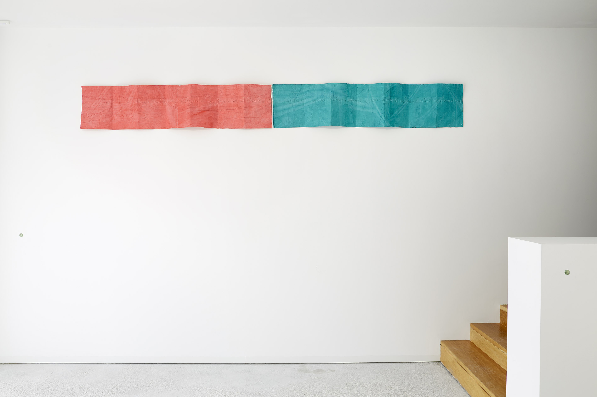
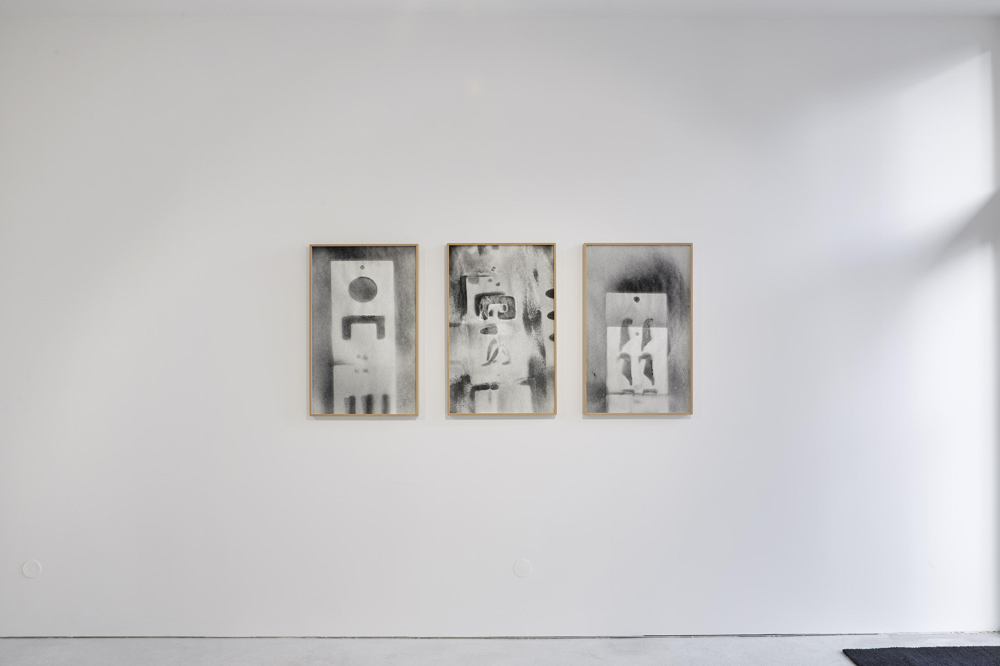
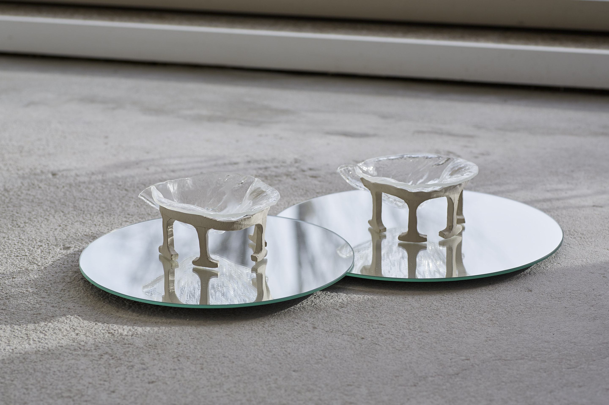
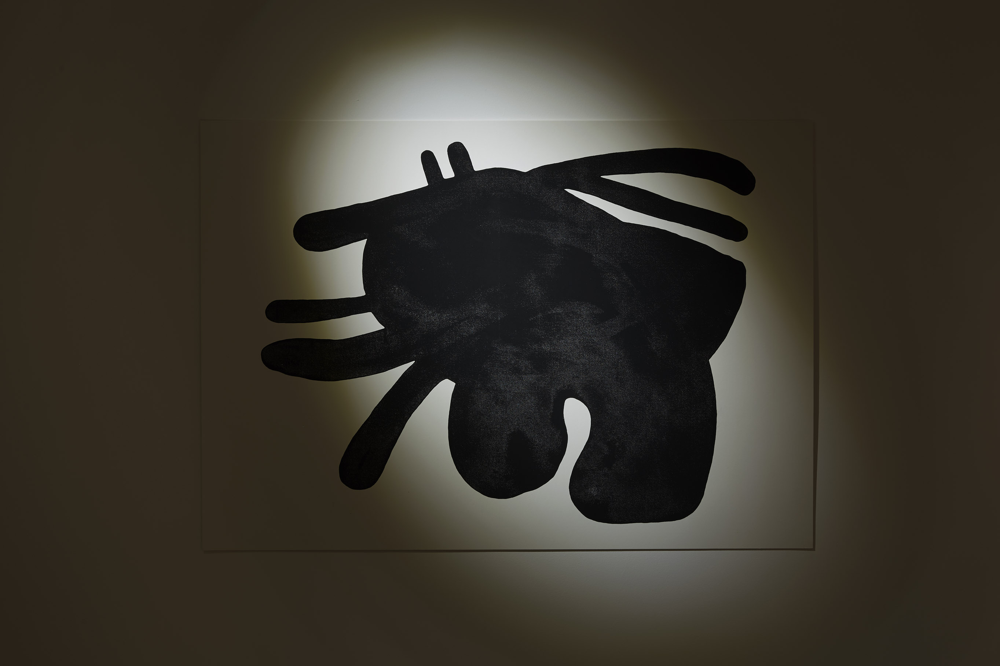
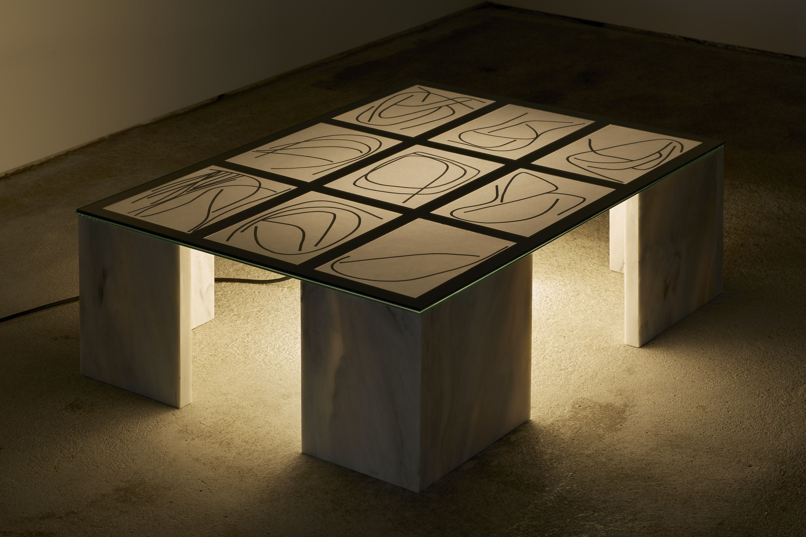
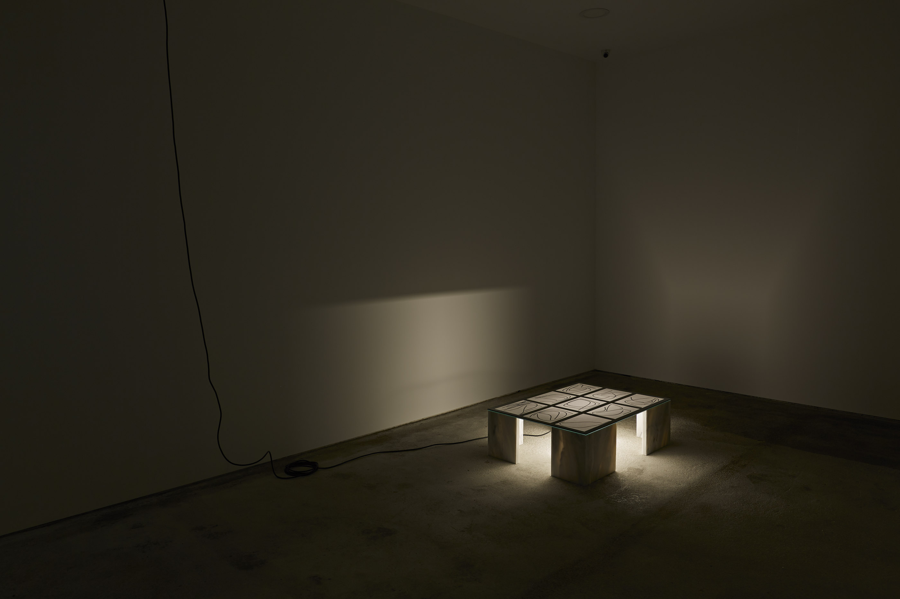
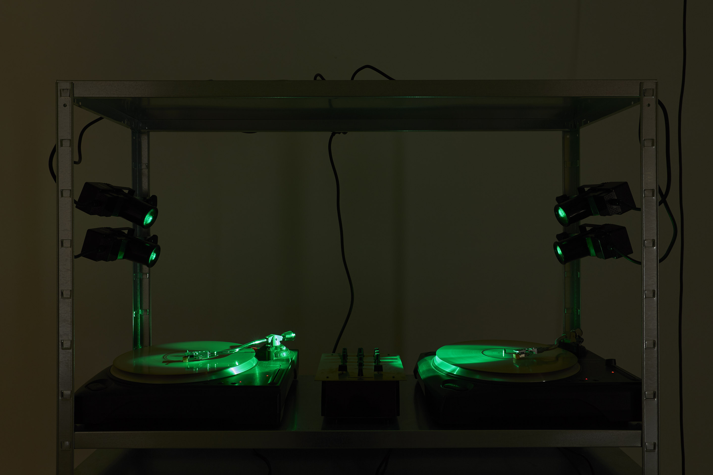
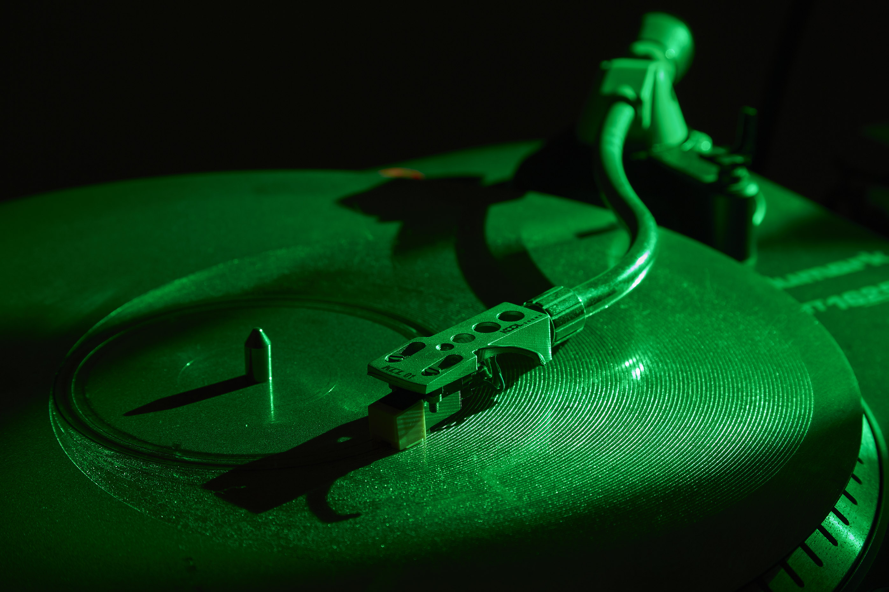

By the end of the process, towards the conclusion,
mistakes become clearer in the practice of drawing. When a drawing is analysed, we can easily identify the hesitations of its doer, the enrolled changes of shape, the selection of materials and its expression. From a single stroke of a line, in few gestures, structure and method are defined towards the definition of the shape and form – through the features of light and texture. These pages conduct to the formalisation of an idea, the sketch of a project. There are many characteristics inherent to drawing: the support, the materials and the technique; the gestures and its ways, that are identifying of the type of drawing and of its author.
Systems of organization and systematization of ways of thinking, derived from the lack of available time for the exercise of ‘drawing’ that admits the error and the study of hypotheses, are the theme of this exhibition. The links between each exhibited artwork are a reflection of their process of logical thinking and of chance, starting from concrete and objective understanding of their materials, light, metal, paper and glass, on their purest state, transmitting a authentic and immersive density. This authenticity inherent to the material that are part of the artworks is clear on their ‘drawing’, enhancing associations between each other, enabling multiple interpretation to their shape.
Thus, ALL OFF’s engages the audience in a game of links between the artworks, starting from the core of the exhibition planning. Reverberation and light are common elements that characterise the exhibited artworks, endowing and emanating the exhibition space, that functions as a light and shade drawing. The occupation of light and shade of the architecture of the gallery alongside the definition of the layout of the exhibition, materialize the incorporeal space, modelling the links and relations established between artworks and authors.








SALA 117, Porto
9.03. – 21.04.2018
Olinda Magalhães
Luís Pinto Nunes,
Luís Albuquerque Pinho
Inês Afonso Lopes
Luís Cepa
Filipe Braga
Andreia Santana,
Dayana Lucas,
Diogo Tudela,
Nuno Henrique